+灯盏(bowl)+7或49个管子.+7盏灯.+受膏者.+(son+of+oil)+金灯台须靠橄榄树供油，才能发光。同样，建造圣殿，也须藉着圣灵充满的人，靠着圣灵做工，才能成事。.jpg)
宋燕红 牧师
主日讲道文字稿
牧师讲道前的祷告
主，您为着爱我们的缘故，您为我们钉死在十字架，不仅把我们从罪的牢笼中拯救出来，更把我们连接在教会，以使我们不会落单儿被那恶者吞吃。主，感谢您！您使我们在教会同心合意为您做工的过程中也看到属灵争战的真实，看到撒但权势的可怕！然而，主，您在十字架上已经胜过了撒但魔鬼一切的权势，您赐给了我们践踏蝎子和蛇的能力。天父，我就求您将这圣灵的大能充充沛沛地浇灌下来。主，您兴起的您的仆人们，让您的儿女们都有一颗愿意为您受苦的心，愿意毫不妥协地跟随您的心，因为我们若没有这样的定意，撒但必然会把我们掳走。主啊，就求您坚固我们，求您保守我们，求您赐恩典给我们，求您赐智慧给我们，赐给我们警醒祷告的心，分辨您旨意的智慧，更赐给我们胜过老我一切罪性的能力。
主，我把今天的主日敬拜全然交在您的恩手之上，求您圣灵的大能充充沛沛地运行在我们每一个弟兄姐妹的心田，更求您的大能运行在我的生命中。主，我是何等渺小卑微有限，您所托付给我的责任，为众人灵魂守望的责任是何等巨大！而人骄傲悖逆的本性是何等抗拒从您而来的劝勉和督责。主，这一切都不能靠我完成，唯有您圣灵亲自施恩，亲自保守，才能使人心挽回，全然归向您。主，就求您今天格外怜悯我，怜悯我完全失去了人的能力，人从肉体可以供应的任何资源，我就全心仰望您圣灵的大能。主，因为我确信我若行在您的心意中，您圣灵的大能就必会充满我，显出您膏立我的明证，以使众弟兄姐妹可以不听撒但的谎言，能够回转归向您。
主啊，就求您加添给我所没有的思考力、逻辑能力、口才，今天特别求您加添给我体力、嗓音，更求您施恩，使您的恩雨降下来，主，求您的恩雨从天沛降，浇灌在我们每一颗愿意向您敞开，不抵挡和悖逆您的心田。主，就求您活泼的、赐人生命的道来更新我们，来光照我们，来激励我们，让我们可以同心合意地在这弯曲悖谬的世代做那照亮世界的金灯台。以上同心合意的祷告祈求乃是奉靠我主耶稣基督的名。阿门！
前言
弟兄姐妹，主日平安。今天我们要进入到一卷新的先知书了，就是撒迦利亚书。在每次进入新的先知书之前，我们都把所有先知书的五种分类再复习一下，好吗？
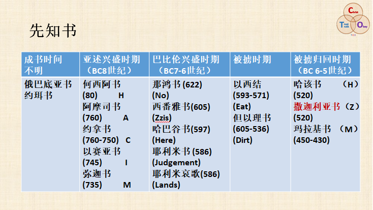
有两卷先知书是我们不知道成书时间的，哪两卷？俄巴底亚书和约珥书；还有五卷先知书是在亚述兴盛时期，就是神在公元前八世纪赐下的，哪五卷？何西阿书、阿摩司书、约拿书、以赛亚书、弥迦书；然后就进入到巴比伦兴盛时期，就是公元前的七到六世纪，同样也有五卷先知书赐下，是哪五卷？那鸿书、西番雅书、哈巴谷书、耶利米书和耶利米哀歌；之后就进入到以色列人被掳到巴比伦的时期，神赐下两卷先知书，哪两卷？以西结书和但以理书；之后，他们在公元前536年回归到耶路撒冷，在他们回归之后，上帝赐下了三卷先知书，是哪三卷？哈该书、撒迦利亚书和玛拉基书。
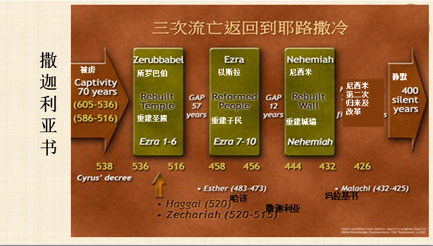
我们上次说了，撒迦利亚书和哈该书赐下的背景是很相同的，对吗？我们再从这个大表上看一下整个大的历史框架，你看以色列人他们分三次被掳，对吗？公元前605年第一次被掳，公元前597年第二次被掳，还有公元前586年第三次被掳。神应许说他们被掳七十年之后他们会回归，你会发现无论怎么算，他们被掳都是七十年。如果从他们第一次被掳公元前605年算的话，他们回归的到耶路撒冷是公元前536年，他们是被掳七十年。我们上次有姊妹说605减去536不得七十得六十九，不是这么算的，因为月份的缘故，有跨月份的，过了那个月就算新的一年了，大家明白吗？如果从公元前586年耶路撒冷圣殿被毁，整个犹大完全被掳到巴比伦算起，你看以圣殿被毁作为时间起点的话，七十年是到什么时候结束？到公元前516年圣殿被重新建立，上帝多么奇妙！对吗？你看上帝是多么信实！所以神的话句句信实，立定在天，神的话句句都是炼净的，没有一个字是废弃的，神的预言完全在历史中百分之百地应验了。当我们看到这样的事实的时候，我们怎能不敬畏上帝，不敬畏他赐给我们的话语呢？大家说是不是？
而当以色列百姓他们回归的时候，你看他们被掳是三批，他们回归也是三批。第一批就是在公元前536年，在省长所罗巴伯和大祭司约书亚的带领下，他们回归到耶路撒冷建圣殿，这是第一批；然后，在公元前458年文士以斯拉又带领第二批百姓回归，第一批回归是重建圣殿，第二批回归就是重建百姓的信仰；第三批回归就是在公元前444年，尼西米回应亚达薛西王允许他回去建耶路撒冷城墙的诏令。还记得我们七十个七的前七个七年是怎么算的？从什么时候开始的？就是从公元前的444年亚达薛西王发出诏令允许尼希米带领百姓回国建城墙起算的，圣经奇妙吗？之后就是尼希米第二次归来改革。所以，被掳回归之后的前两卷先知书——哈该书和撒迦利亚书基本上是在同一时期赐下的，对吧？我们上个星期刚学完哈该书，是在前后不到四个月的时间赐下的，哈该书是四篇信息，对吧？撒迦利亚书也是四篇信息，也是在四个不同的时间赐下的，但是它的跨度大概是两年时间。这就是整个历史的大框架，大家明白了吗？
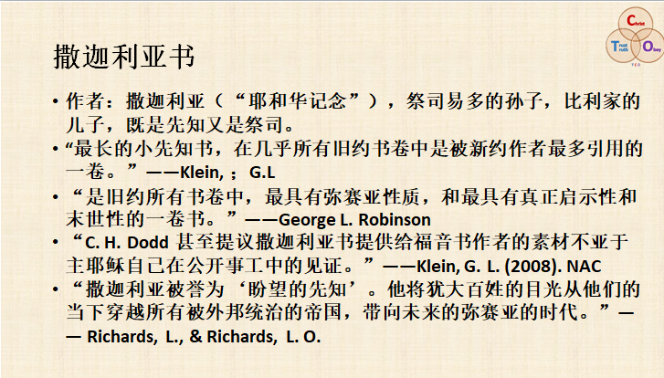
好，我们进入到每一卷先知书的时候，我们也都是先要学习这卷书的作者，就是这位先知的名字是什么意思，撒迦利亚是什么意思？撒迦利亚的意思就是“耶和华纪念”。撒迦利亚是易多的孙子，比利家的儿子，所以他既是先知又是祭司。我摘取不同学者对撒迦利亚书的评述，把它们综合放在这儿，帮助我们能够体会到这卷最长的小先知书它的内涵是何等长阔高深！我就直接读下来，我也不说出处了，好吗？
撒迦利亚书是“最长的小先知书，在几乎所有旧约书卷中是被新约作者最多引用的一卷。”它也“是旧约所有书卷中最具有弥赛亚性质和最具有真正启示性和默示性的一卷书！”“C. H. Dodd甚至提议撒迦利亚书提供给福音书作者的素材不亚于主耶稣自己在公开事工中的见证。”大家知道这是什么意思吗？就是四卷福音书都是耶稣的门徒写的，对吧？Dodd这个学者甚至认为他们从撒迦利亚书里边对主的了解并不亚于他们亲身跟主耶稣相处的三年，或者是他们亲眼见到的耶稣基督的见证。所以，大家能够体会到撒迦利亚书是多么重要，多么具有弥赛亚的性质吗？“撒迦利亚被誉为 ‘盼望的先知’。他将犹大百姓的目光从他们的当下穿越所有被外邦统治的帝国，带向未来的弥赛亚的时代。”
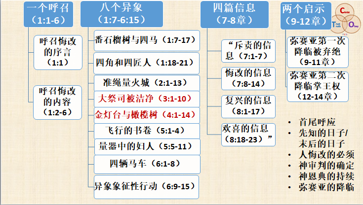
整卷的撒迦利亚书分了四个大的部分，因为它是四篇信息。这四篇信息我们非常容易记忆的，大家这样记就行了，一个呼召、八个异象、四篇信息、两个启示。整卷撒迦利亚书首尾呼应，开始的一个呼召就是呼召百姓悔改归向神，转向神，上帝说：“你们要转向我，我就转向你们。”谁先转向谁？我们要先转向神，神就转向我们，所以我们人生不在于方法，而在于方向，我们到底在为什么而活？这是上帝一直呼吁我们的。之后就是结尾，首尾呼应，你看开始呼召大家悔改，对吗？如果大家不悔改，神的子民能够做照亮世界的金灯台吗？不可能，神的子民中可以有真正的敬拜吗？不可能，所以开头就是呼召悔改。最后结束在哪儿？最后就结束在弥赛亚第二次降临掌王权，当耶稣基督第二次降临掌王权的时候，他要带领所有属他的百姓进入到神国度的荣耀中，我们就完全可以彰显出神的荣耀了，这就是撒迦利亚书的首尾呼应。
我们读撒迦利亚书的时候，你会发现先知撒迦利亚站在他所处的时代，处于在他所处的日子，但是他所有的异象、他的预言、他的信息、他的启示都不仅仅局限在他的日子，而是穿越时空直接把我们带向了末后的日子、末后的审判、末后的荣耀,所以贯穿始终的就是这几个基本事实：人的悔改是必需的，神的审判是确定的，但是神的恩典是持续的，弥赛亚是必会降临的。这就是撒迦利亚书。
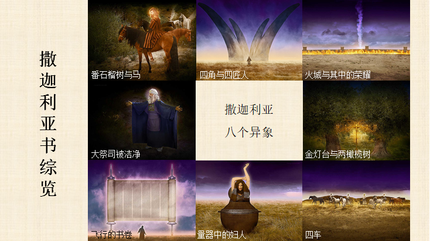
那今天我们要聚焦在两个异象上，就是“大祭司被洁净”和“金灯台与橄榄树”。为什么要聚焦在这两个异象上呢？你看看这八个异象，第一个，番石榴树与四马；第二个，四角和四匠人；第三个，火城与其中的荣耀；第四个，大祭司被洁净；第五个，金灯台与两棵橄榄树；第六个，飞行的书卷；第七个，量器中的妇人；第八个，四辆马车。你发现夹在中间的异象是什么呢？就是“大祭司被洁净”和“金灯台与橄榄树”。这什么意思呢？上帝最中心核心的思想就是要让当时的以色列百姓在大祭司约书亚和省长所罗巴伯的带领下，照着神的心意全力以赴地建造圣殿，以使以色列这个群体可以成为照亮世界的金灯台，这也是他赐下所有异象、启示、呼召、信息包括将来的默示的目的。
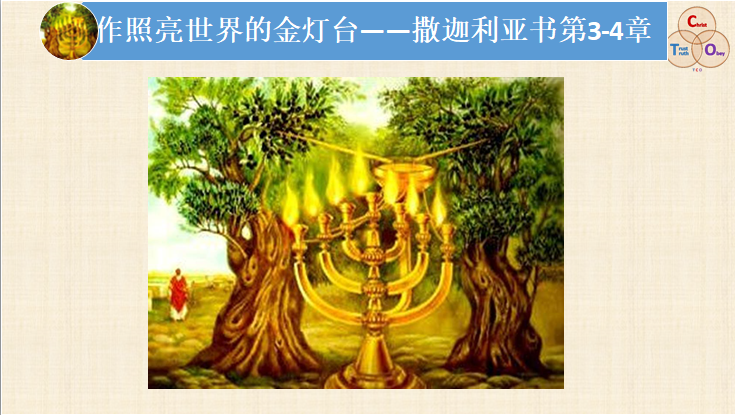
撒迦利亚书分两次讲完，今天我们综览1到8章，我的方法是沿着3章和4章“大祭司被洁净”和“金灯台与橄榄树”异象的经文，按照经文的自然脉络梳理下来，然后把其它几章综览融进这两章经文的讲解，好吗？所以我就用“作照亮世界的金灯台”来做今天讲道的题目。下面我们就把撒迦利亚书的3到4章详细展开，并且把1到8章的其它内容综览进去，会涵盖我们所有读过的1到8章的内容，然后提炼出它的属灵原则并且把它应用在今天我们的教会，化为我们的行动。所以，我们每次讲道提炼出的属灵原则不是针对别的教会，大家理解吗？也不是针对当年的以色列，而是就指向今天咱们的教会，就是我们这些弟兄姐妹，我们坐在这里谦卑地领受神赐给我们的道，我们要如何回应，大家理解吗？
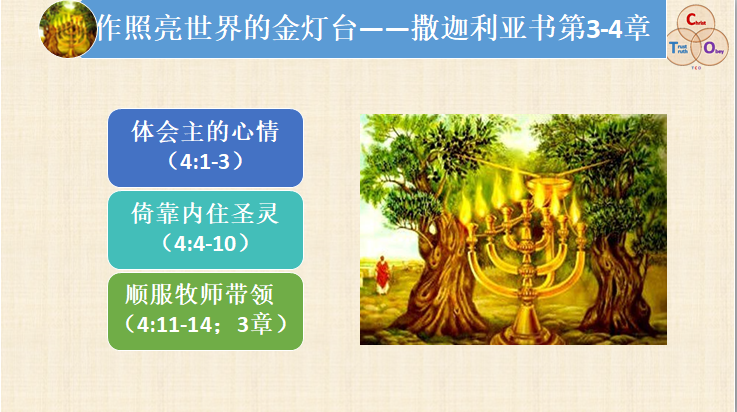
今天我们总体要怎样回应呢？神希望以色列这个群体成为照亮世界的金灯台，大家说上帝今天希望我们教会成为照亮世界的金灯台吗？同样希望我们成为照亮世界的金灯台，所以今天我们学习撒迦利亚书就要有这样的心志，就是我们要同心合意作照亮世界的金灯台，大家理解吗？我们如何才能够作照亮世界的金灯台呢？三个方面：体会主的心情，倚靠内住圣灵，顺服牧师带领。第一个部分就是4章的1到3节；第二部分，4章的4到10节；第三个部分，4章的11到14节再加上第3章。那在讲第一个部分“体会主的心情”的时候，我会把整个1到8章综览进去，所以第一部分的内容不仅涉及4章的1到3节。
体会主的心情 （4:1-3）
1、从金灯台的异象体会主的心情

好，我们现在就进入到第一个方面，体会主的心情。我们在读撒迦利亚书的时候，你体会到了神对我们的殷切盼望吗？体会到他是多么盼望他所赐给我们的光可以透过我们照耀出来吗？下面让我们进入到金灯台的异象。我相信撒迦利亚作为先知同时他又是祭司，他最明白金灯台代表什么含义，所以神让他见到了金灯台的异象。4章1到3节，我们读一下，好吗？读的时候，你也努力地把自己带入撒迦利亚的心境，你努力去想：作为一个祭司，他看见金灯台的时候，他会想到什么呢？“那与我说话的天使又来叫醒我，好像人睡觉被唤醒一样。他问我说：「你看见了什么？」我说：「我看见了一个纯金的灯台，顶上有灯盏，灯台上有七盏灯，每盏有七个管子。旁边有两棵橄榄树，一棵在灯盏的右边，一棵在灯盏的左边。」”
这个异象就是撒迦利亚看见了金灯台，对吧？你想想祭司和灯台有什么关系呢？撒迦利亚看见灯台他会想到什么呢？当年摩西在旷野中完全照着神在山上指示他的样式带领以色列民造会幕，不可以有任何自由发挥，上帝让他怎么造，他必须怎么造。当会幕造成之后，你进入到圣所，右边就是陈设饼的桌子，左边是什么？左边就是一个金灯台。所罗门建造圣殿之后，金灯台变成了十座，左右分别是五座。祭司的工作是干嘛的？他们每天都要往金灯台里边灌灯油，以保持整个灯台不熄灭。弟兄姐妹，这是什么意思？金灯台在会幕中在圣殿中是什么作用？它表明的是什么意思？“光和亮。”谁是光？当然首先神是光，所以神住在他们中间。仅此而已吗？当神与他们同在的时候，以色列百姓就要完成神呼召他们的目的，让神的光透过他们这个群体，透过他们个人的生命照出来，对不对？
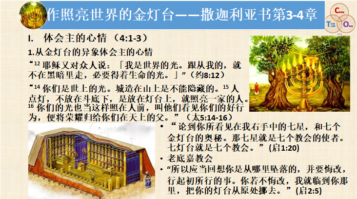
你看到了新约的时候，我们主耶稣就把金灯台的意思非常直白地表达出来了，耶稣告诉我们说：“「我是世界的光。跟从我的，就不在黑暗里走，必要得着生命的光。」”（约8:12）耶稣说他是光，对吗？所以我们跟随他，就不会在黑暗里走。但是不仅如此，因为我们跟随了这位作为世界光的主，他的光也就住在了我们的里边，以至于我们也成了世界上的光，所以主耶稣说：“你们是世上的光。城造在山上是不能隐藏的。人点灯，不放在斗底下，是放在灯台上，就照亮一家的人。你们的光也当这样照在人前，叫他们看见你们的好行为，便将荣耀归给你们在天上的父。”（太5:14-16）”
那到了启示录的时候，主耶稣就直接把教会称为金灯台了。在主耶稣给七间教会的书信里，主耶稣是这么说的，他说：“论到你所看见在我右手中的七星，和七个金灯台的奥秘。那七星就是七个教会的使者。七灯台就是七个教会。”(启1:20)大家明白了吗？谁是金灯台？“教会”，我们教会就是金灯台。但是我们的金灯台真的在发光吗？主在给七间教会的书信里边说七间教会中有两间真的是为主发光的，他们在非常惨烈的逼迫中也坚决为主而活，传扬主道，做耶稣基督美好的见证，这就是士每拿教会和非拉铁非教会，主对他们全是鼓励，全是表扬，全是将来荣耀的应许，没有一字半句的否定或者是批评或者是责备，都没有。然后有四间教会，主对他们既有鼓励又有表扬，然后也有责备。只有一间教会，没有得到主一个字儿的表扬，他们得到的是主全盘的否定和批评，主甚至说如果他们不悔改就要把他们从嘴里吐出去。这是一间贫穷的教会吗？是一间没有恩赐的教会吗？是一间没有才干的教会吗？不，这间教会恰恰是才能才干才华财富俱备的老底嘉教会！然而他们却因着他们的财富才能才华才干，完全陷在了一种麻木的属灵自欺的光景中，以至于他们根本没有为主做工的热心，因为他们完全被自己肉体的私欲所缠累，所以主大大地责备这间教会。
当我仔细思想我们的教会会面临什么试探的时候，我也感到我们的教会会面临老底嘉教会的试探，大家觉得吗？因为我们的教会也是才能才干才华财富样样都不缺。但是，如果我们不定意定睛盯住主的心意，正是这样人所看重的才能才华财富才干反而会缠累我们，让我们现在自我麻木自我感觉良好。老底嘉教会说他们是贫穷的吗？不，他们说他们是富足的，一样都不缺，而主说什么？主说：“你们是贫穷的瞎眼的，是可怜的。”所以我一直为咱们的教会祷告，求主保守我们的教会，因为只有圣灵的激励才可以让人不沉迷在自己的才能才干财富对我们的缠累中麻木中，才能让我们真的有一个愿意为主受苦的心志，来忠心地跟随主，全力地为他而活！大家说是吗？
而有一间教会，就是以弗所教会，上帝鼓励他们很多，他们有很多做得好的方面，但是神也指出他们需要改进的那一点。你看，常常是这样的，如果我90%都做得很好了，当主要责备我那10%的时候，你觉得我们本能的反应是什么？你就会数算自己那90%做得好的方面，对吗？但是主可从来没说；“如果我责备你，现在我让你这方面提高，你若不提高没关系，你那90%我都记着呢。”没有，主从没有这样说过。大家知道我们在属灵的道路上就是这样，你不进则退，这个退是无止境的，人在属灵生命上一旦进入撒但的网罗，倒退是非常快的。所以主耶稣责备以弗所教会，就是让他们在爱心上悔改。虽然他们有很多做得好的方面，但是主说他们若不悔改怎样？主说：“你若不悔改，我就临到你那里，把你的灯台从原处挪去。”(启2:5)弟兄姐妹们，这事情真发生了。以弗所教会是保罗亲手建立的教会，但是到了公元五世纪的时候就完全没落了。
我们希望我们教会这个金灯台被主挪去吗？“不希望。”所以我们透过主的责备、主的盼望、主殷切的希望、主的劝勉，我们能够感受到主的心情吗？主是在威胁我们吗？从他的责备里边，我们也能够体会到他是多么盼望我们可以作照亮世界的金灯台，他的盼望何等殷切！对不对？弟兄姐妹们，你读到这儿，你心里生发出要成为照亮世界的金灯台的渴望吗？你能多少体会到主的一点心情吗？
2、 从悔改的呼召体会主的心情

刚才我们是从撒迦利亚书第4章的开篇从金灯台的异象，我们去体会主盼望我们作照亮世界金灯台的心情。接下来就是综览了，我们从开篇的第一个呼召，就是从悔改的呼召去体会主何等盼望我们作照亮世界的金灯台。我们一起把撒迦利亚书开篇的1章1到6节带着感情读一下，好不好？不是读一段与我们不相关的文字，乃是带着感恩的心来读上帝赐给我们的恩言，这两种心态是完全不一样的。
1 大流士王第二年八月，耶和华的话临到易多的孙子、比利家的儿子先知撒迦利亚，说：2 「耶和华曾向你们列祖大大发怒。3 所以你要对以色列人说，万军之耶和华如此说：你们要转向我，我就转向你们。这是万军之耶和华说的。4 不要效法你们列祖。从前的先知呼叫他们说，万军之耶和华如此说：『你们要回头离开你们的恶道恶行。』他们却不听，也不顺从我。这是耶和华说的。5 你们的列祖在哪里呢？那些先知能永远存活吗？6 只是我的言语和律例，就是所吩咐我仆人众先知的，岂不临到你们列祖吗？他们就回头，说：『万军之耶和华定意按我们的行动作为向我们怎样行，他已照样行了。』」
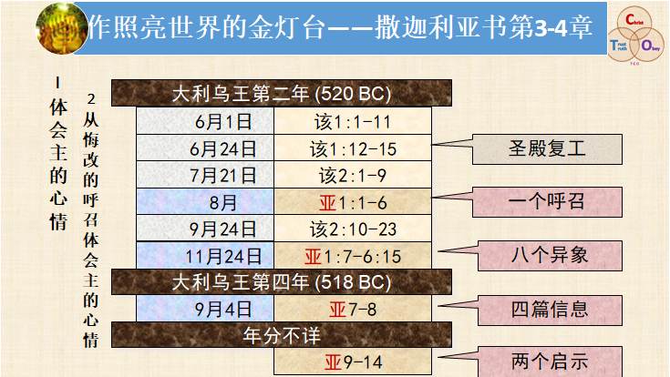
好，撒迦利亚书第一篇信息，一个呼召是什么时候赐下的？大流士王第二年八月。我们上个星期刚讲过哈该书，你还有印象吗？大流士王第二年八月是什么时候？圣殿复工是在什么时候？我们看一下上边的图表，你看以色列人六月二十四号复工建圣殿，然后哈该第二篇信息是在他们复工将近一个月之后赐下的，鼓励他们什么？胜过失望恐惧，对吗？他们面临什么困难？生活条件没有任何改变，整个建造圣殿的工程也看不见什么耀人的果效，还有很多政治上的风险。所以，上帝不光是用哈该来鼓励百姓，他也借着撒迦利亚来鼓励百姓，这两卷书中的时间就是这样重要，当我们进入具体的时间，我们就能走入当时的处境，更加理解撒迦利亚书的内容。
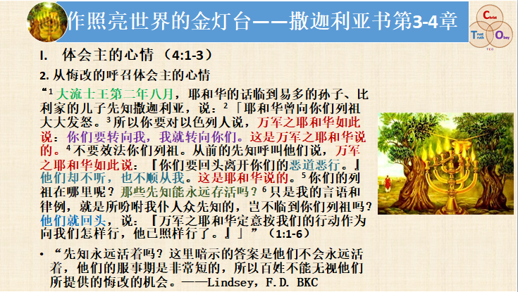
我们再看一下整个刚才我们读的经文，有一点我解释一下，可能大家不理解。第5节说：“你们的列祖在哪里呢？那些先知能永远存活吗？”是不是有点不理解？他的意思就是说先知能永远存活吗？当然，“这里暗示的答案就是先知们不会永远活着，他们的服事期是非常短的，所以百姓不能无视他们所提供的悔改得机会。”我直接引用信徒圣经的解释。我们来看一下上帝呼召百姓悔改，可见在他们圣殿建造一个月之后遇到了相当的挑战，对吗？也就是说在我们已经下决心为主而活，我们全力摆上了，我们一起同心合意地为主做工，在这个过程中挑战是不是随时存在的？当挑战出现的时候，我们老我的势力强大吗？强大不强大？“强大。”我们老我的势力很强大，它要把我们再拉回哪里去？再拉回到原来的老我的生活模式里，因为那个是自然的，你按主的心意而活是不自然的。所以，我们随时随地都需要先知的劝勉、督责、责备和教导，大家理解吗？否则人很容易就回去了，却不自知！
所以，你看上帝借着撒迦利亚书给百姓的劝勉是什么？跟哈该书是不是一个意思？注意第3节，就一节经文，却两次说“万军之耶和华如此说”，一次说“这是万军之耶和华说的”，中间夹着的是什么？“你们要转向我，我就转向你们。”这是人生最关键的问题，哈该已经在他第一篇讲道里边非常清晰地向我们显明了，就是我们必须以神的工作为我们人生的第一优先次序，我们必须把我们生活的每一个层面都转向上帝，为他所交托给我们的大使命而活，这是今天我们的应用，大家理解吗？所以上帝有极其宝贵的应许，“你们要转向我，我就转向你们。”
“你们要转向我”，这不是你生命还没有转向，你做点事儿，你还是在这个世界中，你说：“我为主做点工，神赐福我，让我工作更顺利，让我挣钱更多，让我家庭更幸福……”我们上次讲道也讲这个问题了，对吗？今天借着撒迦利亚书的劝勉，我们要再一次特别清晰地认清这个真理，我们的人生若没有转向，我们是得救的余民吗？“不是。”还记得上个星期讲道中说主什么时候才称他们为余民？就是在他们完全转向上帝之后，上帝才称他们为得救的余民。所以，今天如果你的生命并没有完全转向神，弟兄姐妹们，千万不要自欺，以为你将来就等着上天堂了。大家明白吗？如果你清楚地知道自己的生命根本就没有完全转向神，那今天又是一个悔改的时刻了。如果我们不悔改呢？上帝当然还会用各种管教，如果他爱我们的话。但是，如果你发现“我并没有完全转向神，神根本不管教我呢？”这说明什么？说明你不是神的儿女，大家明白吗？所以，我们人生的方向远远比我们人生的方法重要，在教会我常常发现弟兄姐妹是在错误的方向上，就是还活在世界中，却想找方法。大家理解吗？这是行不通的。
上帝不提供我们错误方向上的方法，他是要用他的话把我们人生的方向完全转变，让我们从为自己而活转为为他而活。方法呢？我们都聪明的很，保罗说你原来怎样把自己的肢体献给罪，作罪的奴仆，现在就照样把自己献给神，做神的奴仆，大家明白了吗？方法是一样的，但是方向是根本改变了。上帝不仅仅是这样强烈地劝勉以色列人要转向他，并且应许他们只要转向上帝，上帝就转向他们。上帝转向他们意味着什么？就与他们同在，住在他们中间，上帝就是光，光就会透过他们彰显出来，美好吗？这是美好的应许。但是，同时上帝也给他们警戒，用什么警戒他们？用他们的列祖警戒他们。所以当我们读旧约圣经的时候，如果你发现自己跟以色列人一样，你千万不能觉得找到安慰了，大家明白吗？你说：“以色列人也这样，看来我们都是这样，我们对罪都是无能为力的。”以色列人那样，他们就灭亡了，他们得救的只是余数。“以色列人虽多如海沙，得救的不过是剩下的余数。”如果你发现自己真实的生命光景是和以色列人一样的，就应该怎样？因着神在历史中对他们的审判，他们大批大批的人轻弃了神的恩典就与天堂无份了，我们就要马上悔改，而不是给自己找到一种假安慰，大家明白吗？
大家透过上帝在第一篇信息中呼召以色列百姓悔改，你体会到主的心情了吗？他的心是多么热切，他是多么盼望我们转向他，为他而活。因为他就是光，当我们转向他的时候，他就要作我们生命的光，他的光就要透过我们彰显出来，我们教会每个弟兄姐妹都这样做的话，我们就成为照亮世界的金灯台了。大家愿意吗？“愿意！”感谢主。
3、从主的热心体会主的心情
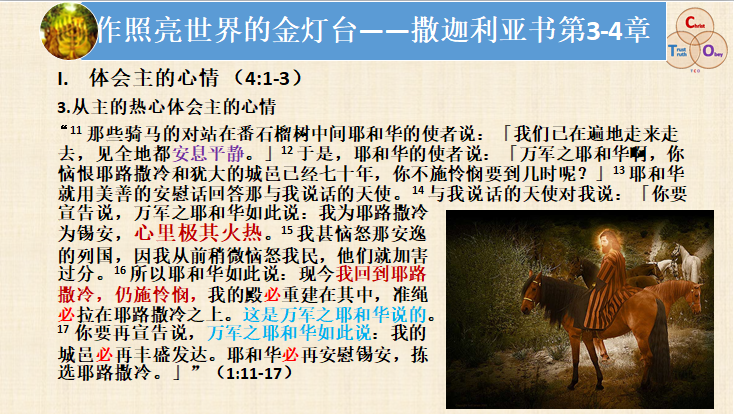
接着，我们还可以从哪儿体会主的心情？我们也从主的热心来体会主的心情。我特别把1章的11到17节摘出放在这儿，我把中间的“心里极其火热”放大标红。所以我也迫切地祷告：求主帮助我们每个弟兄姐妹，让我们都能够感受到主心里面对我们是何等火热！圣经里边说他的心里极其火热。这个背景是在第一个异象里的，第一个异象大家可能有点不太明白，是吗？就是有一个骑红马的使者，站在番石榴树中间，在他后边又跟了骑红马的，骑黄马的，还有骑白马的，是吧？然后神让他们干什么？让他们在遍地走来走去。于是，当他们走来走去之后，他们就回来，对站在番石榴树中间的耶和华的使者说什么？“「我们已在遍地走来走去，见全地都安息平静。」”这好不好？说好的，为什么？说不好的，又为什么？如果我们不看后边，你以为挺好，哇！全地平静安息。但这不是积极意义上的平静安息，这种平静安息就是仿佛你进入太平间一样的平静安息！是没有任何生命气息的，是死寂一片的！没有人向主的工作发热心，没有人真的爱主，没有人在意主在意的是什么，没有人全力为主摆上，去为主做工。
所以，接下来的信息你就看到了，神的使者说什么？“万军之耶和华啊，你恼恨耶路撒冷和犹大的城邑已经七十年，你不施怜悯要到几时呢？”神的使者的意思是什么？“主，你为什么不施恩给你的百姓，为什么允许你的百姓在这样一片死寂中呢？”主是怎样回答的？我们看到任何时候这都不是主的责任，都是神百姓的责任,因为这个世界对我们的吸引力是这样的大，这个世界对我们的诱惑是这样的真实，我们在这个世界上的肉体的享受是这样的真切，我们若是真的全然摆上为主做工，我们遇到的挑战也是这样的真实，以至于我们就不向主来发热心，就停在死寂中了。所以主就用他的热心来激励我们，主说什么？主说他为锡安，他为耶路撒冷，心里极其火热。并且他还应许说那些被神使用管教以色列百姓的列国，主必要大大地刑罚他们，这就是主给他百姓的应许。在建殿的过程中是会遇到各种挑战的，但是神必会帮助我们胜过，必会帮助我们胜过！因为虽然主恼怒他的百姓一点点，可是那些列国就大大地残害主的百姓，所以主是非常愤恨他们，最后是要审判他们的！
主透过这样的话，再一次让我们感受到他对我们的爱，对当时的以色列人如此，对今天的我们照样是如此。我们虽然常常冷漠，不对主的工作发热心，但是主还这样爱我们，把这样的恩言赐给我们。我感受到他好像撕开他的胸膛一样，他让我们看他的心，他说：“虽然你们对我的心是冷的，但是我对你们的心是如此火热，我对你们极其有热心，我是有极大的热心！”他也应许说他必会回到耶路撒冷，他仍然会怜悯耶路撒冷。于是，他用四个“必”来向我们显明他的应许，“必”什么？“我的殿必重建在其中”，“准绳必拉在耶路撒冷之上”，这些“必”就够确定的了吧？但是，在这短短的几节经文里，上帝又两次说“万军之耶和华如此说”，还说“这是万军之耶和华说的”，“你要再宣告说，万军之耶和华如此说：我的城邑必再丰盛发达。耶和华必再安慰锡安，拣选耶路撒冷。」”（亚1：17）弟兄姐妹们，你感受到主的热心了吗？从主的热心里你感受到了体会到了主是何等盼望我们作照亮世界的金灯台吗？
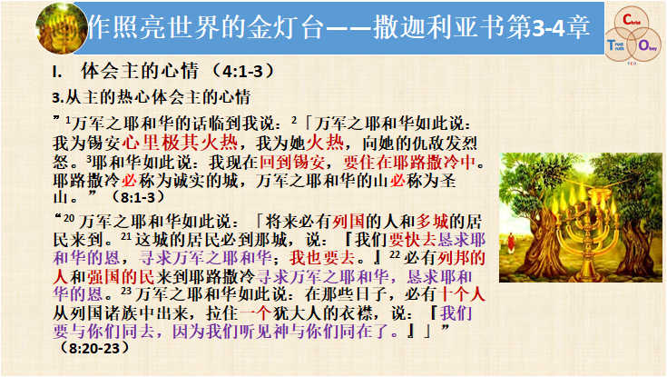
这是第一个异象，对吗？你看，不是一个呼召、八个异象吗？异象之后就进入到什么了？四篇信息，在四篇信息里，开始的两篇是责备，后面两篇是安慰。你看在主后边两篇安慰的信息里，他又再一次向他的百姓表达他的热心，你看这一次他表达热心的语气比开始那一次更加强烈，情感更加炙烈，对吗？所以，我们若不是被罪深深地捆绑，已使我们的心变成了石头心，有哪一颗肉心不会被神对我们的爱所感动呢？你看8章的1到3节说：“万军之耶和华的话临到我说：「万军之耶和华如此说：我为锡安心里极其火热，我为她火热，”强调两次，对吗？ “向她的仇敌发烈怒。耶和华如此说：我现在回到锡安，要住在耶路撒冷中。耶路撒冷必称为诚实的城，万军之耶和华的山必称为圣山。”弟兄姐妹们，你被上帝被我们的主第二次这样带着炽烈的情感向我们表达的他对我们的热心感动了吗？而主要向耶路撒冷发热心，向他的圣城发热心，向他的圣殿发热心，向他的子民发热心，今天就意味着他向谁发热心？向我们发热心，向他自己亲手在地上设立的教会大发热心。
他向他的百姓大发热心，目的是什么？当我看到8章的20到23节这种欢喜的信息，这是最后一篇信息的结尾了，我是被极大地感动。如果今天我们的教会能够作照亮世界的金灯台，这个异象就会活化在我们的教会里，就会成为我们每个弟兄姐妹生命中真实的经历。你看看如果神住在他的百姓中，百姓也顺服我们的神，竭力地建造圣殿，然后作照亮世界的金灯台，会发生什么事呢？
20 万军之耶和华如此说：「将来必有列国的人和多城的居民来到。21 这城的居民必到那城，说：『我们要快去恳求耶和华的恩，寻求万军之耶和华；我也要去。』22 必有列邦的人和强国的民来到耶路撒冷寻求万军之耶和华，恳求耶和华的恩。23 万军之耶和华如此说：在那些日子，必有十个人从列国诸族中出来，拉住一个犹大人的衣襟，说：『我们要与你们同去，因为我们听见神与你们同在了。』」
美好吗？在今天这意味着什么？若是我们可以成为照亮世界的金灯台，我们的生命就是那样有吸引力！你不用死乞白赖地拉别人去，而是什么？如果我在A公司工作，不光我公司里的同事拉着我的衣襟说：“我也相信你信的神，因为我明显看到你得了神的祝福。”哇，列国列邦外边城镇的也来了，就是别公司的人也来了，他们十个人拉着你：“你带我去吧，我求你了，你带我去你们教会吧，也让我来认识你认识的这位神吧，行不行？求求你了。赵姐，带我去，你们教会在哪儿？告诉我一下……”大家明白吗？“明白”。
哇！这是一幅多么美好的异象！我觉得这个对我也有极大的吸引力，我就朝着这个方向为咱们教会祷告，好吗？我们若是让基督的光透过我们的生命彰显出来，我们走到哪里，就成为那里人的祝福，因为这个世界是如此黑暗，这个世界是如此需要神的光，而他们在别处没有看见这个光啊，他们只可以透过我们的生命来看见这个光，所以，列国的人多城的居民要干什么？“我们要快去恳求耶和华的恩，寻求万军之耶和华；我也要去。”他们争先恐后要来，对吗？然后，他们还要干嘛？“寻求万军之耶和华，恳求耶和华的恩。”因为他们看见我们是完全仰望倚靠神的恩典的人，我们是完全寻求我们的上帝的人。于是，我们的生命就显出光来了，就对他们有这样大的影响力，弟兄姐妹们，这好吗？“好！”愿主祝福我们。所以弟兄姐妹们，你从主的热心体会到了主的心情了吗？我求主借着今天的讲道来感动大家，来激励大家，让我们都因着被主的热心感动，让我们可以同心合意地建造神的圣殿，以使我们在这黑暗弯曲悖谬的世代作照亮世界的金灯台。
4、从全书结构体会主的心情

最后，我们还可以从哪儿看到神的心情呢？我们从整个1到8章的结构也可以体会主的心情。第一个呼召刚才我们已经讲过了，是吗？我们体会到主的心情了，对吧？所以，从“你们要转向我”这个呼召开始（因为我们生命若不全然转向上帝，我们就无法成为照亮世界的金灯台，这个大家明白了吗？）接下来就进入了八个异象。第一个异象（1：7-17），主就用番石榴树和四马的异象向我们传递出什么样的真理？“他向我们发热心”，记得吧？所以我们不可以一片死寂，我们也要回应他的热心，全然摆上自己，因为我们活在这个世界上实在是除了为主而活这个目的之外，没有值得我们把自己被伟大的上帝所创造的生命降服在他面前的第二个目的了，大家说是不是？这就是第一个异象，你看又配合着让我们体会到主的心情了吗？
而第二个异象（1：18-21），四角和四匠人，是什么？撒迦利亚看见了四个大角，又看到了四个匠人，然后天使解释说四个大角表示的就是侵略残害以色列神的百姓的列强，对吗？四个匠人呢？就是把这四角打碎的匠人。上帝在这儿应许什么？上帝应许必会消灭一切抵挡神百姓的势力。所以神的百姓应该害怕困难吗？不应该怕困难，因为神已经应许他必会与我们同在，他必会帮助我们，没有任何从撒但而来的势力能够抵挡我们为主做工，大家理解吗？你觉得从这一点上能够体会主的心情吗？可以，是吧？主盼望我们作照亮世界的金灯台吗？“盼望。”
然后准绳的异象（2：1-13），就是有一个使者拿着准绳量耶路撒冷城，量它有多长有多宽，最后量出有多长有多宽吗？“没有。”上帝说这个城大不大？好像没有城墙的乡村一样，记得吗？结果，上帝把耶路撒冷城形容为火城，为什么？因为他说他的荣耀要住在里面，以至于整个耶路撒冷城像着了火一样。“火”用来形容神的荣耀，人没有办法不看见这个光，大家理解吗？因为神与他们同在。所以神也应许要把四面八方的以色列人重新带回到巴勒斯坦这块儿地方，上帝必会帮助他们建圣殿，也必会让他的荣耀充满他的圣殿。那今天上帝帮助我们建圣殿吗？上帝会跟我们同在吗？如果我们转向他的话，我们的教会也会成为火城吗？他的荣耀会充满在我们的教会吗？“会的，会的！”那大家体会到神的心情了吗？
接下来第四第五个异象，一会儿我再详细展开，就不在这儿说了，好吗？第六个异象就是飞行的书卷的异象（5：1-4）。前五个异象是祝福的异象应许的印象，后三个异象是审判的异象，这些审判还有祝福都是从撒迦利亚年代开始的，但是要一直沿着历史的长河慢慢展开，到了末日七年大灾难，到了千禧年的国度，到了末日审判，到了新天新地，达到高潮，完全应验，大家理解吗？所以，你看飞行的书卷多奇妙！撒迦利亚看见了一个飞行的书卷，它是多长多宽？是十肘宽，二十肘长。这是什么的长宽啊？是帐幕的长宽，然后书卷里外都写着咒诅的话语。你看这个书卷飞行在遍地，这个是帐幕啊，大家明白吗？这个长宽是帐幕的长宽，帐幕的意思就是神与我们同在。弟兄姐妹们，你盼望神与你同在吗？盼望吗？“盼望。”若是我们转向了神，神与我们同在就是祝福我们；若是我们悖逆，不听神的话，不转向神，神的同在就是咒诅我们管教我们。大家理解吗？所以全地都要受审判，所有不听神话的人，上帝说要把他们全部清除，这个当然到末世才会完全实现。
今天呢，在应验吗？在应验。弟兄姐妹们，神跟我们同在吗？我们每个主日敬拜的过程中，你都不能否认神的同在，对不对？所以，我们任何把自己的生命全然转向上帝为主的工作发热心的弟兄姐妹，神的同在就是祝福；如果我们不转向神呢？神的同在就是咒诅，你会等着生命中一个又一个从神而来的管教。这是从旧约到新约从来没有改变过的，因为神爱我们，他不愿意让我们沉沦进入到灭亡，大家明白吗？所以弟兄姐妹们，你从飞行的书卷体会到神的心情了吗？
接着就是量器中妇人的异象（5：5-11），也是很奇妙很奇特，这个需要讲解一下。有一个大量器，上帝说这个表达的就是地上的恶人，全地的恶人的形状，当然这是非常异象化的。然后有一个妇人就被丢在这个量器里了，有一个圆铅盖子就盖在了这个量器口上，于是，又有两个妇人抬着这个盛着一个妇人的量器，要把它抬到哪儿去？抬到示拿地，示拿就是巴比伦。抬到示拿干什么？要给它盖房子，“等到房屋齐备，就把它安置在自己的地方。”因此在末世七年大灾难的时候，巴比伦很有可能要被重建，你看在启示录里边有两章都是预言巴比伦的倾覆，所以这个异象表达的是那里将成为罪恶的发源地。巴比伦一直都是非常富有寓意的，今天巴比伦意味着什么？上帝说：“神的百姓啊，你们赶快从巴比伦出来，你们出来吧！”神经常这样呼吁，今天的巴比伦是哪儿？“世界”，世界就是巴比伦，世界就是罪的发源地，所以神是要审判这个世界的。你从审判中体会到神的热心了吗？什么热心？赶紧出来，我的百姓！赶紧来转向我，为我发热心，让你的生命为主发光，成为照亮这世界的金灯台！否则，你就会跟世界一同被审判，进入到灭亡，在火湖中受永永远远的痛苦。弟兄姐妹们体会到神这个热心了吗？
我们看四辆马车（6：1-8）的异象呢，也是讲审判的。第一辆马车，前面套的是红马，是吧？然后呢？ “第二辆车套着黑马，第三辆车套着白马，第四辆车套着有斑点的壮马。”然后神的使者就把这四辆马车分别差派到东西南北，让他们干嘛？就是去行审判了。你说我怎么知道他们是行审判？这个异象完全在启示录6章的1到8节应验了，到我们学启示录的时候，你就会看到神审判的灾难是何等大！所以弟兄姐妹们，你从四辆马车的异象体会到主的热心了吗？“体会到了。”如果你体会到了主的热心，就一定不要被神审判进入灭亡，我们要回转，归向神，来同心合意地建造主的圣殿，作照亮世界的金灯台！
最后，这八个异象是以一个象征性的行动（6：9-15）结束的，就是上帝让撒迦利亚去找金子，是吧？给约书亚做金冠冕，他就给约书亚戴上金冠冕，并且预言约书亚这个大祭司的职份就是预表着将来耶稣基督大祭司的职分和君王的职份，耶稣基督最终必会掌王权。所以，我们要做世上的金灯台，照亮世界的金灯台，让更多不信主的世人来跟我们一样进入到神的国度，进入到耶稣基督掌王权的国度的荣美中，我们肩负着比任何世人都伟大和荣耀的使命，大家一定不要轻忽这个使命，好吗？
接下来进入到四篇信息，开始是斥责的信息（7：1-7），神斥责他们什么？他们仍然是有表面的敬虔，比如说我们也在读经，在祷告，在参加主日敬拜，在参加周间团契，但实际上我们并不是完全为神而活才这么做的，大家明白吗？还是为自己。当时具体责备他们的内容就是他们的禁食，主指出他们的假冒伪善，主说你们禁食岂是为我禁食的，岂不是为你们自己禁食吗？今天这有可能吗？我为减肥可以禁食一周吗？当然很痛苦啊，如果我为减肥禁食，是不可能持续一个星期的，因为没有神加添能力；我为了表现自己可以禁食一个星期吗？禁食不了一个星期，因为你也没有能力，你为了表现自己至多可以说：“哎，我今天禁食一天哈。”会吗？“会。”所以，如果我们的动机错，我们做什么都错，不管看上去你的行为是属于宗教范畴还是属于在世界上的工作范畴，在神的眼里没有属世和宗教之分，大家明白吗？我们都要为他而做，神才看为宝贵。所以，神最厌恶的就是你为着个人的动机却采取着属灵的方式，大家理解吗？你还不如像世人一样，就用世界的方法跟人打拼。神更厌恶哪个？更厌恶假冒伪善，所以神责备他的百姓。
你体会到主对我们发的热心了吗？主要让我们真的因为想要让神的光从我们的生命中彰显出来，真的是盼望自己可以作照亮这世界的金灯台，我们好好地学神的话语！因为我们离开神的话语，我们不可能活出神的光的，对吗？我们来参加主日敬拜，来敬拜他，我们参加周间的团契，我们委身在三层次的牧养，因为我们盼望主的光透过我们的生命彰显出来。我们热心地服事，因为在这个过程中神的光要从我们的生命中彰显出来，我们不是为了自己的目的。如果说：“我最近身体不太好，我不敢不服事神，我怕神管教我，让我病情更加重。”这是为谁的目的？自己的目的。你说：“我最近啊，正好面临一个坎儿，我这个工作上下就在一线之间了，我就想升一级啊，所以最近我得格外好好地委身，早晨灵修、周日敬拜和周间团契一次也不敢落。”神悦纳你这个摆上吗？不不，不悦纳，因为主说你岂是为我做的？主责备百姓，你岂是为我禁食？你岂不都是为你自己禁食吗？大家明白吗？所以求主的光照在我们的心里，光照出我们的罪，让我们可以悔改来归向他，让我们也体会他的热心。
第二篇就是神命令他们悔改的信息（7：8-14），因为主说他们是额坚心硬的，再说一遍哈，这个信息的听众是谁啊？“我。”对当时的人来说呢？对当时的那一代人来说，主的这些信息，说“你们是额坚心硬的，是悖逆的。”是向谁说呢，弟兄姐妹们？是向放弃了巴比伦优越的生活已经回到了耶路撒冷，回应神建圣殿的呼召愿意为主摆上的这一代以色列民说的，可不是被掳的那一代以色列人！喔！你是不是感到神的要求是很高的？主也说：你若不回应我对你的呼召，将来怎样？你呼求我，我也不会回应你。所以，弟兄姐妹，在教会中最要不得的就是用人的方法，用人的标准，用人的意思，大家理解吗？我们用人的意思一衡量，你觉得“喔，这上帝太苛刻了吧？他们都已经放弃了巴比伦优越的生活，回到这样一片狼藉荒凉的耶路撒冷，虽然他们建殿停工十六年，那都是太合理的理由了，他们也没有再放弃信仰，再回到巴比伦追世界去呀，上帝你怎么还这样责备他们呢？”你觉得我们用人的方法会不会这样想？会吗？“会。”所以，我们在教会中就是进入到了神的世界，是神的法则，是神的心意，我们绝不能掺杂任何属人的想法。当时以色列他们回到耶路撒冷，北边的撒玛利亚人过来说我们一块儿建圣殿吧，他们同意了吗？“没有同意。”为什么不同意？因为神的工作不能掺杂，如果你一掺杂，教会就必然会败坏，必然会混乱。
什么叫额坚心硬？就是神现在对你的要求，你不回应，你不悔改，你就是额坚心硬和悖逆的。大家明白吗？以前他们回归到耶路撒冷那一段时间，他们是顺服神的，对吧？但是面临了新的挑战，他们就不想听了，所以神责备他们，催逼他们悔改。弟兄姐妹们，主这样责备大家的时候，你们会悔改吗？会吗？主怎么责备你们呀？讲道的时候大家当然会说“都会，都会，我们都会悔改。”但是我发现只要面对个人，我只要一劝勉都会遇到极大的挑战，这说明我们都是额坚心硬的，都是悖逆的，这就是我们的心。
接下来上帝又给了两篇信息，一个是复兴的信息（8：1-17），一个是欢喜的信息（8：18-23），刚才我在讲到神的热心的时候，就说到这一点了。我们从1到8章的综览，你能够感受到主的心情吗？主是何等盼望我们脱离老我的一切缠累，我们来转向神，他就必转向我们，他必时刻与我们同在，以使他的光可以透过我们的生命彰显出来，以使我们成为照亮世界的金灯台。大家愿意吗？“愿意”，感谢主！
这就是第一个部分，我们若想作照亮世界的金灯台，我们必须要体会主的心情，因为主是非常充满感情的，他的感情是非常炽烈而饱满的，当我们真的被他炽烈和饱满的爱所感动和激励的时候，这才是我们可以起来行动的一个最根本的原因。所以，我求主借着我们今天的讲道，感动我们每一个弟兄姐妹，就像他感动我一样，让我们深刻地体会到他的心情。主是何等盼望我们作照亮世界的金灯台，他向我们大发热心，他向我们发极大的热心，他对我们的心是极其火热！愿主的火热可以融化我们每一颗冰冷的心，让我们为主火热起来！
倚靠内住圣灵（4:4-10）
1、唯有倚靠圣灵方能成事 （4:4-6）

我们能够作照亮世界的金灯台，不仅仅要体会主的心情，最关键的是要怎么做呢？就是要倚靠内住的圣灵。我们接着看4章的4到6节，我们先看撒迦利亚看到了金灯台的异象之后，他在4节问了主这样的话，他说：“「主啊，这是什么意思？」与我说话的天使回答我说：「你不知道这是什么意思吗？」我说：「主啊，我不知道。」”你觉得有点困扰吗？撒迦利亚不知道什么呢？他作为祭司不可能不知道金灯台是干什么的，以及金灯台有什么预表的含义，所以我认为撒迦利亚看见金灯台，他就已经生发了我前面生发的所有感动了，但他说：“主啊，我不知道。”所以天使才说“你不知道这是什么意思吗？”对吧？那你觉得这个金灯台有什么特别之处吗？这个金灯台跟圣殿中和帐幕中的金灯台相比，它更加强调出了它为什么能发光，它这个光源是从哪儿来的。所以，我认为撒迦利亚在问这个问题，天使就回答他了。天使怎么回答他的？“他对我说：「这是耶和华指示所罗巴伯的。万军之耶和华说：不是倚靠势力，不是倚靠才能，乃是倚靠我的灵方能成事。”异象是给谁的？撒迦利亚，他是先知。他要用这个话鼓励谁啊？鼓励所罗巴伯。所罗巴伯是谁？省长，他要带领以色列百姓建圣殿，所以这个异象就是给所罗巴伯的鼓励。他们回去的时候困难大吗？“大”；资源多吗？“不多”；钱多吗？“不多”；有什么人的才能吗？“没有”。但是，主鼓励所罗巴伯：你不用怕，因为不是靠势力，不是靠才能，乃是靠我的灵方能成事。这句话弟兄姐妹都会背，对吧？
但是，对今天的我们而言，它到底意味着什么呢？我先分析这两个词好吗？什么叫势力？什么叫才能？这是我在一个希伯来语词典里的截屏，它可以做希伯来语的字词分析，左边的就是势力这个词的含义，你看有勇气、财富、英勇、力量，还有什么？大能、能力，Host就是说你能主持一件事，你能主办一件事，然后财富、军队，这就是咱们中文翻译的“势力”。那才能呢？最主要的就是能力和能量。所以你觉得这两个词放在一起，是不是就涵盖了我们人做一件事情的时候你感觉必须具备的那些要素？你说一件事怎么才能做成？你得有能力，是吧？你得有勇气，你得有资源，你得有供应，你得有……不管你是有大能还是有大权利，总之，就是人能够想象的一切要素这俩词都包含了。所以，主说的是什么意思？这些都没有办法成就神的工作，成就神工作的只靠圣灵的大能。
我默想这句话，神也给我极大的鼓励。我们任何一个弟兄姐妹活在这个世界上，都会遇到倚靠势力和才能的试探，大家觉得我牧养教会会遇到这个试探吗？“会。”如果我要倚靠势力才能会表现在什么方面呢？首先倚靠我自己的势力才能对吧？看看我有多少钱，我这个能力现在还有多少，对吧？当然，神也一再地在这方面教导我功课。记得我刚蒙召做传道人的时候，我确实认为我要给别人传福音别人不会不相信的，因为我原来工作的时候，我真的没有任何一次presentation不赢得客户掌声，他们都说：“我们要不装你们的设备，我们就太落后了!”所以我自然就认为做神的工作不是一样吗？结果有一个圣诞节呢，神就让我特别深刻地学了这个功课。我们一起去我们共同的一个朋友家，他是董津涛IBM的同事，因为我们原来一块儿做过项目，他跟我关系也很好。我就准备去他们家的时候给他传福音，我在逻辑、例证各方面都准备得可说是完美无缺，我也认为肯定能说服他，在我看来没有任何理由不会说服他的。当我们到他们家给他传福音时，他真的自始至终都是认真听的，我就认为最后我一邀请他“你要不要信耶稣？”他肯定说“我信。”对吧？结果我说：“好，你都听得这么明白了，你信不信耶稣？你也来信耶稣吧。”他恍了一下神，说：“哎呦，差点我就被你绕进去了。”
这是我第一次遭遇到挫败，就是说我这么精心准备的信息，我用来说服任何客户肯定都会同意了，马上就签合同了，而且他也被我说服了，整个我的口才、逻辑、例证都没有任何的缺陷，结果发挥功效了吗？没发挥，因为圣灵没有在他心里动工，所以我们这一切都是白费。不是说人的这些能力没有必要，而是说必须求圣灵的大能运行在整个信息中，不是靠我。当时我没有突破这一点，我当时想那些飞机上的设备装不装其实不是太重要，你说我一说服，怎么大家都装呢？就没有人不装。你看福音，人人都需要吧？我还用同样的方法做这样的准备，我去说服别人，他怎么可能不信呢？现在看为什么他不信？因为这是不一样的，因为他已经被撒但弄瞎了心眼，除非圣灵的大能临到他，首先把他的瞎眼打开，让他能看见，我们这些信息才可以进去。这是神让我学的第一个功课，就是我不能倚靠我的能力和才能，神的工作完全是圣灵的能力，跟我没啥关系，如果圣灵不工作，我做的一切工作都是白费，是吧？
在咱们教会目前阶段，神也让我学另一个功课，就是我牧养教会也不需要倚靠大家的势力和才能。这什么意思？大家可能一听有点懵，你看，假如说今天圣灵感动我，让我去劝勉和责备赵姐，你觉得我若倚靠人的势力和才能，我会胆怯吗？“会。”我会有什么胆怯？我会想说不好的话赵姐不接受，比如说我也特别清楚就赵姐的生命状态而言，她多半儿不可能接受的，因为她若容易接受不是就不用我劝勉了吗？听讲道自己就悔改了，对吧？而赵姐一走，下次咱们洗礼上哪儿举办啊？咱们这儿敬拜爱宴，好吃好喝的也受影响了……会这样考虑和胆怯吗？会。这就是倚靠人的势力和才能的试探。你说，如果圣灵感动我去劝勉赵姐，我若不劝勉赵姐，圣灵还跟我同在吗？就不会跟我同在，我就不可能承担目前神给我的这么多人眼看来繁重的事工，对不对？也不可能准备出讲道了，更不可能宣讲这个道了。所以我越来越明白，我不需要在意别的，我需要的就是我完全要向主忠心，因为我若有任何不向他忠心的地方，神就会撤去跟我的同在。而神的工作什么都可以缺少，唯一不能缺少的就是圣灵的大能，因为挽回人心的不是要靠人的势力，不是要靠人的才能，乃是靠圣灵的大能，才可以让一个为自己而活的人心甘情愿地放下自己，把自己的生命全然奉献给我们的上帝。
弟兄姐妹们，上帝在我生命中所做的工作，他也正在你们每一个弟兄姐妹的生命中做吗？所以，让我们在为神做工的时候永远铭记这个准则，这是永远不能够破的准则——就是我们做神的工作，不是倚靠势力，不是倚靠才能，乃是倚靠神的灵方能成事。如果我们真的与神同行，我们不管得罪谁，我们也不得罪神，你觉得神会与我们同在吗？“会。”如果我们教会的每个弟兄姐妹都是这样地向主忠心，神会丰沛地供应我们一切所需要的金钱、能力、才干和各种资源吗？会不会？“会。”一定会的！所以弟兄姐妹们也能多少明白为什么劝勉、督责、甚至责备对我是挑战了吧？我想对我有挑战，对弟兄姐妹当然也有挑战，因为我们老我都是倚靠看得见的势力和才能的，我们都是不太放心倚靠圣灵加添的能力的。
我不是在为教会禁食祷告一个星期嘛，到周五的时候，我就觉得有点坚持不住了，我发现我的思路也跟不上，所以我就有点想放弃，我想这样的话主日我是不能讲道了，我要是主日不能讲道，那大家不是受亏损吗？是吧？但是我在主的面前祷告，祈求神的印证，神仍然感动我应该为教会献上这样的禁食祷告。你觉得我胆怯吗？“胆怯。”但是我要真的相信圣灵的大能，我就不应该胆怯。因为神的大能是可以超越我一切的有限和软弱，就是在我的软弱中可以更加地彰显出他的大能，彰显出他与我同在。大家明白吗？所以，我自己也觉得我今天讲道格外有力量，是吗？不是倚靠势力，不是倚靠才能，乃是倚靠耶和华的灵方能成事，今天就被我见证出来了，对不对？“对。”
2、只要倚靠圣灵就能克服艰难险阻

好，我们从4章的4到10节“倚靠内住的圣灵”来看，“唯有倚靠圣灵方能成事”是我们必须学到的第一个功课，接下来第二点，我们就要对圣灵有极大的信心，因为圣灵确实可以帮助我们攻克为主作工过程中任何的艰难险阻，什么困难都没有办法胜过圣灵的大能。你看第7节怎么说？“大山哪，你算什么呢？在所罗巴伯面前，你必成为平地。他必搬出一块石头，安在殿顶上。人且大声欢呼，说，愿恩惠恩惠归与这殿（殿或作石）”什么意思？为什么说大山都能挪去？神在鼓励所罗巴伯怎样？不倚靠势力，不倚靠才能，你就倚靠我的圣灵，你带领百姓倚靠我的圣灵来做主的工作，大山一样的困难也必被我挪去，夷为平地。这个就是神给所罗巴伯的应许。为什么他说“你必搬出一块石头安在殿顶上”？看右边这个图，就是任何拱形的建筑完工的关键都在这个拱顶石。大家看到了吗？最上面这块石头就是拱顶石，拱形的建筑都是这样砌上来，两边这么砌砌砌……最后中间拱顶石一堵上，就完工了。所以，主就用这样一个形象的比喻鼓励所罗巴伯：你不要惧怕，神的工作必会做成，我必赐圣灵的大能与你同在，使你可以带领百姓完成圣殿建造的工作。于是，别人看见了就不能不欢呼：“愿恩惠恩惠归与这殿！”这殿里充满了神的恩典！
主啊，我是多么热切地盼望这样的异象可以实现在我们的教会中，我们的教会也充满了神的荣耀，因为我们不倚靠势力，不倚靠才能，我们单单倚靠圣灵的大能，而圣灵的大能是无限量的。我们常常软弱就是因为我们太看自己了，你看我也有软弱，对吧？所以神要让我做的，我就没有理由不做，就不能说“这样好像不科学”等等。那圣灵的大能是怎样的无限量呢？我也愿主借着以弗所书1章的17到20节这段经文大大地激励我们，让我们都可以明白今天上帝赐给我们内住的圣灵是已经把多大的能力赐给我们了，我们千万不要用自己的有限来限制圣灵的大能：
17求我们主耶稣基督的神，荣耀的父，将那赐人智慧和启示的灵，赏给你们，使你们真知道他。18并且照明你们心中的眼睛，使你们知道他的恩召有何等指望。他在圣徒中得的基业，有何等丰盛的荣耀。19并知道他向我们这信的人所显的能力，是何等浩大，20就是照他在基督身上，所运行的大能大力，使他从死里复活，叫他在天上坐在自己的右边。
保罗这样迫切地为以弗所教会的信徒祷告，他没有为他们祷告病得医治，事业发达，也没有祷告他们婚姻幸福、家庭美满、儿女孝顺，对吗？他祷告什么？祷告赐人智慧和启示的灵来光照以弗所教会的信徒们，让他们真知道神，真认识神。认识神的什么呢？两大范畴，一个就是认识神给我们的呼召，他要带给我们的荣耀，他将来要赏给我们的基业，那是太超乎我们的想象了，是有何等丰盛的荣耀！弟兄姐妹们，如果神开我们的眼睛，让我们看到这一点，我们就没有办法不转向他，为他而活了。所以，我特别感恩神祝福我们所有新受洗的弟兄姐妹，是吧？牛茜。前两个星期，新受洗的弟兄姐妹在学主祷文，按主祷文祷告“愿你的国降临”，我们花两次团契来展开这个祷告——愿你的国降临，因为你如果不知道神的国是什么样，你不可能愿他的国降临的，所以我们就把圣经中所有关于神的国的信息综合在一起，我也让大家提问任何关于神国度的问题，还有末日审判的问题，新天新地的问题，大家都问出来。哇！我们连续这两个星期的团契结束的时候，大家都是恋恋不舍不想走，都极大地被激励。这是什么？照明你们心里的眼睛，让你们知道你们所蒙的恩召有何等的指望。
第二个层面是什么？你若知道了神给我们的呼召，他要带给我们的荣耀，你肯定就要全力为主而活了，因为你突然就会发现：你为别的什么目的而活都太糟践你的生命了，太亵渎“神住在我们生命中”这个伟大的真理和事实了。于是，保罗第二个愿主的圣灵帮助我们的就是：让我们知道他给我们的能力是何等的浩大！浩大到什么程度？这个能力就是使耶稣基督从死里复活的能力；使耶稣基督从地上升天坐在天父至大宝座右边的能力；是将来那会使万有归一，万有都要完全降服在主耶稣基督面前的能力。弟兄姐妹们，你诧异吗？这能力给谁了？给了我们每一个人。所以，上帝向我们保证，给我们确保，百分之百地向我们应许，我们若是为主做工，你感到自己没能力，上帝会赐给你能力吗？会的！只要我们为主摆上，我们需要的一切的能力都由神亲自赐下，他的能力是无限量的。我在前几天祷告的时候，当然为教会也为同工更为我自己的生命祷告，我也求主让我更深经历他的能力，所以今天我就经历到他的能力了，是比以往任何一次主日我都更深地经历到他的能力的。他的能力无限量，是不被我的体力所限制的，大家明白吗？
3、 唯有殷勤为主做工才能经历圣灵大能

对我是这样，对大家是不是也这样？是一样的。那你会自然问：“我怎么没有体会到这个能力？”谁现在已经体会到了圣灵赐给我们的浩大的能力，举一下手好吗？感谢主，感谢主，我发现举手的都是真的认真竭力为主摆上的，这就是下边的主题了，为什么我们会体会不到圣灵的大能呢？因为唯有殷勤为主做工才能经历圣灵的大能。8节到10节，“耶和华的话又临到我说：「所罗巴伯的手立了这殿的根基，他的手也必完成这工，你就知道万军之耶和华差遣我到你们这里来了。谁藐视这日的事为小呢？这七眼乃是耶和华的眼睛，遍察全地，见所罗巴伯手拿线铊就欢喜。」”
在刚才这段经文里我们看到了主要求所罗巴伯殷勤为主做工了吗？当然所罗巴伯是带领百姓为主做工的，他不是自个儿做工，是不是？神给他的鼓励就是神也要他用来鼓励百姓的，也带领百姓一起殷勤为主做工的。现在圣殿的根基已经立下了吧？在神圣灵的大能扶助下，这个工作能完成吗？“能。”必能够完成。然后，撒迦利亚说：“你就知道万军之耶和华差遣我到你们这里来了。”你就能知道撒迦利亚是真先知，因为他所预言的是百姓看着不合理的，看我们的资源，看我们的能力，看我们的生活处境，看我们的政治局势，建圣殿能完成吗？百姓认为完不成！今天主仍然让我们学习这个功课，你什么都不要看，只看什么？就在每一个处境中单单看“主啊，你让我做什么？”这个是我们唯一需要问主的，当我们照主的话去做的时候，主就会给我们能力，让我们可以完成。
接下来你看主察看全地吗？“这七眼乃是耶和华的眼睛”，这就说明主遍察全地，我们今天教会的每一个人都在他的鉴察之中吗？他知道我们每一个人的心思意念吗？主知道谁藐视教会的工作，谁没有把教会的工作放在第一优先吗？知道，对吧？主说：“谁藐视这日的事为小呢？”主看这不是小事。你比如说：“哎呦，其实在社会上我都特别热心助人的，我在工作上是好员工，我也是好妈妈，我也是好父亲，我也是好老板，我也是好……我呢，就是现在没有把主的工作放在第一优先。”在主看来，这是小事吗？不，不是小事，所以主说：“谁藐视这日的事为小呢？”那意思就是说主看这是大事，你不要小看这个事儿，因为这是主最看重的事，有什么事比主看重的更重要呢？我忘了是哪个伟大的圣徒说的：“我们做的任何工作，无论大事小事，只要跟主的事发生关联，这就是大事；无论大事小事，只要跟主的工作不相关，这就是没用的事儿。”
所以，主鼓励我们要殷勤为主做工，他“遍察全地，见所罗巴伯手拿线铊就欢喜。” “线铊”是一个翻译很有争议的词，翻译成什么的都有，我把它理解为准绳和铅坠，因为所罗巴伯是领袖吧？他最主要的工作就是要带领百姓建这个圣殿，怎么建呢？就是不能歪了也不能不平，对吧？所以，他首要的工作就是这个工作，他要一直持续地保持自己跟主同在，他才能够带领百姓不偏离神的心意建圣殿，对不对？他殷勤做工，主就喜悦他。那弟兄姐妹们，我们殷勤做工，主喜悦我们吗？“喜悦！”如果所罗巴伯不殷勤做工，主的大能会跟他同在吗？“不会。”今天我们不殷勤做工，主的大能会跟我们同在吗？“不会。”

我再稍微总结一下，我们说到为主做工，大家不要忘记哈该的第三篇讲道说的是什么，就是要警惕属灵自欺，也就是说圣洁不能间接传递，污秽能间接传递，如果我们还有没悔改的罪，我们不可以做神的圣工！因为那会污秽神的圣工。所以大家发现吗，我们若想为主作工首先要靠圣灵的大能干什么？首先要靠着圣灵的大能胜过老我的罪性（圣灵的大能这时候就发挥功效了），我们就能参与到神的圣工了。而我们在做神的工作的时候，撒但必然拦阻，那就会遇到各种困难，比如说生病，家里出什么事儿……总之,你的工作越重要拦阻就会越大！这样我们就要靠着圣灵的大能来胜过，对吧？所以，这两个前提就是我们经历圣灵大能的前提，大家明白吗？
我们什么时候就不能经历圣灵的大能呢？我原来举过天天的例子，可能有弟兄姐妹没听到，再举一遍：天天小时候弹琴，老师让他要特别认真地先单手慢慢弹，他不，他没有这个耐心，他看看就双手弹。然后我就跟天天说老师不是让你先单手慢慢弹吗？他说他做不到，我说那你祷告，然后天天就祷告，祷告之后继续两手一块儿弹。我说：“你祷告了，怎么还两手一块儿弹？”他说：“是啊！妈妈，你不是让我祷告吗？我祷告了，但是主没帮助我。”我们有没有同样的心态呢？当我们讲到神的帮助的时候，我们似乎感觉主应该先怎样……比如主说不可以计算他人的恶，对吧？我心里还是计算他人的恶，我们的意思常常就是说：“主啊，你得先给我能力，让我感受到了这个能力，我才能够不去计算他人的恶。”对吗？再比如说我们为主做工，比如说我吧，我今天早晨还有点含糊，因为我早晨觉得特别难受，不能支撑，所以我说：“主啊，你给我个印记，你现在让我经历一下你的能力，我好有点信心。”主也没有给我。但是，当我开始带大家祷告的时候，我就进入到为主做工了吧？我一下就感到神给我能力了，大家明白吗？
我原来也举过这个例子，你什么时候能够体会到一辆汽车的马力？是在你开它的过程中，它的马力取决于你油箱供油的多少，也取决于你给它的速度有多大，对不对？不是我们说：“哎呦，这个汽车有油吗？我先要感受一下它的力量才能确定。”然后你坐在这儿空踩油门“轰-轰-轰-”，这会怎样？毁这汽车吗？毁汽车。我们也一样，神不会在我们不做工的时候，不靠着圣灵的大能治死身体恶行的时候，让你一股一股地感到神的能力，让您觉得“哎呦，我都憋的慌了，我简直是没办法啊，我得去哪儿干点活。”不会这样的，大家理解吗？神给我们加添的能力是跟我们为主做工的难度和挑战成正比的，它是无限量的，这个无限量不是我们说要多大有多大，而是神让我们做的工作有多艰巨，他给我们加添的能力相应就有多大。所以当神带我们在主里成长的时候，就是这个过程，我们越在主里成长，我们越会怎样？越会经历更大的挑战。如果你不看自己，不看环境，单单仰望主，你就能更深地经历圣灵所加添的能力，大家明白吗？
我们刚才举手说经历到圣灵大能的是少数弟兄姐妹，现在我让弟兄姊妹再举一个手，谁愿意经历圣灵的大能的举手，好吗？感谢主，我们全体弟兄姊妹都举手了，我们都愿意经历圣灵的大能。那我们怎么经历？从两个方面我们就可以经历：第一，胜过老我罪性就可以经历；第二，殷勤为主做工的时候就可以经历，所以是在我们为主做工的过程中，我们被圣灵提升被圣灵充满。刚才不是说不倚靠人的势力，不倚靠人的才能，单单倚靠神的灵吗？这个意思是不是说人的才能人的能力都没用呢？不，如果我们单单倚靠圣灵的大能，我们单单顺服他倚靠他，结果你发现圣灵充满我们的时候，他就会提升我们的智力，赐给我们能力，提升我们的体力，提升我们的理性，提升我们的意志，提升我们的情感，而不是废掉我们的智力、能力、体力、理性、意志和情感。
为什么我会强调这一点？因为这是太多不想为主全然摆上，不想靠着圣灵大能治死自己老我的罪性，不想靠着圣灵的大能完全为主而活，却又想经历圣灵大能的人会进入的试探。比如说我们会不会经常有这样一个祷告：“主啊，我是没有能力的，我也没有智力，我现在应该选择什么工作？主，你就给我开门关门。”会这样祷告吗？刚开始的时候，神也怜悯我们，常常会给我们开门关门。后来你祷告一段时间，你有没有发现：“呦，神怎么不听我祷告，不给我开门关门了？怎么还是有三四个选择摆在我面前呀？”大家明白神的心意吗？如果神老给我们开门关门，我们成什么人了？我们就成机器人了，我们就成白痴傻瓜了，我们就不用思考，不用判断了，那就废弃了我们的理性意志情感能力，对吗？所以上帝不是让我们不分析不判断，而是要我们转变方向，让我们的判断标准不一样了。
上星期妈妈团契的时候，有一个妈妈也问我这个问题，然后我也是这样辅导她的，因为前一段她特别蒙主的恩典，但是我看到撒旦就想引诱她了，就是让她祷告开门关门什么的……就是这些感受。但是她特别受教，我跟她辅导一下，她就立刻明白过来了。因为她要给孩子选择上哪个学校，然后这两个学校怎么选呢？她就用让神开门关门的方式祷告，她说最后神也没听，也没给她关门,所以当这俩学校同时摆在她面前的时候，这可怎么选呢？我说：“你就依据与原先完全不同的价值观来选择，因为我们原来在世界中，你肯定有一套自己的价值观：比如说这个国际学校的学生可能都是世界名流的孩子，我要进入他们中间我就好跟他们拉关系，说不定我还可以给我老公找个什么关系，然后就可能对我老公事业上的发展会有什么帮助，而我的孩子从小就可以跟这些达官贵人们成功人士们的孩子作同学，将来这很可能成为他的关系网……你会不会这么想？所以原来你就依据这个价值观，两个学校比较一下，看哪个符合你这些盼望，你就让孩子去哪个学校了，对吧？”
我接着说：“现在就不一样了，现在我们虽然是在地上，但我们是天国的大使，所以你就要想了，你为什么送孩子去学校？你要让他身心灵都得到全面的栽培，那这个就是最重要的。哪一个学校最适合栽培他？不一定那么高的学校就适合你的孩子，他也许够都够不着，那就是拆毁他，对吧？所以你就要选择哪一个学校是最适合我孩子的。另一方面神也要用你啊，如果你的孩子进这学校了，就意味着你被神差到这学校了，所以你就要考虑哪一个学校的家长跟我的背景比较相似，我比较容易给他们做福音预工，我更容易在家长中发挥影响力，在孩子中发挥影响力。”哇！她一下就觉得特别明白了，对那两个学校如何选择也就一目了然了，大家明白吗？

所以，一定不要以为跟随圣灵的带领就是省事，不用你想了，不要说：“神说不是倚靠势力，不是倚靠才能，我们就不用思考了。”大家明白吗？“不是倚靠势力，不是倚靠才能。”不是不思考，你看我这几天就使劲思考，我得把我所有的体力、能力、智力都完全用上摆上，同时完全倚靠圣灵的大能，大家明白吗？我用司布真的一段话再说明刚才我说的这个道理，我们一块儿读好不好？来，预备开始：
神不是赐下恩典，像一枚钱币，给小孩子玩耍，而是像我们把钱给经纪作买卖，是赐下来使用的。……在神的伟大恩赐中，一切都是实用的。他种树为让它们结果子，播种是为了从中可以收成。我们不可漫不经心，不可投机取巧；神从来不会这样。当人以为恩典赐下来只是令他安心，给他一种超越他同胞的优越感，或者使他可以避免那当受的责备，他就是不晓得主赐下恩典的目的，确实，他就是不认识这伟大的秘密。神在我们心里动工，为了使我们也可以工作，他拯救我们，为的是我们可以服事他，使我们在恩典上富足，为了使他的荣耀的丰富可以得到彰显。
司布真说得好吗？所以我们若想要经历圣灵的大能，我们没有第二条道路可以走，我们唯有殷勤为主做工。保罗也在罗马书12章11节如此鼓励我们，他说：“殷勤不可懒惰。要心里火热。常常服事主。” 保罗还在哥林多前书15章58节不仅仅鼓励我们要殷勤做工，他更给我们极大的应许，他说：“所以我亲爱的弟兄们，你们务要坚固不可摇动，常常竭力多作主工，因为知道你们的劳苦，在主里面不是徒然的。”
所以，我们在主之外所做的任何工作都是徒然的，没有一样可以带到永�琚C而上帝应许我们为他所做的一切，哪怕在人眼里看为微小，但是神都看为伟大，都会带到永�琱丑C神不仅仅给我们永�琲�奖赏和盼望，他更给我们现今的应许：我们若为他做工，我们就能够经历到他圣灵大能同在的应许！我们原来也看过历代志下16章的9节，我们还记得吗？“耶和华的眼目遍察全地，要显大能帮助向他心存诚实的人。”当所罗巴伯向神心存诚实的时候，主的眼目在观察，对吗？主看见了，看到他手拿线铊，主说什么？“他就欢喜。”所以主若找着任何一个肯全然摆上为他做工的弟兄姐妹，主的心就大得满足。主的心大得满足的时候，他就会无限量地赐福我们的生命。弟兄姐妹们，你愿意做这样蒙福的人吗？“愿意。”那么，求主帮助我们，让我们倚靠内住的圣灵，同心完成神交托给我们建造圣殿的圣工，以使我们可以做照亮世界的金灯台！
顺服牧师带领（4:11-14；3章）
好，我们若想做照亮世界的金灯台，我们首先要体会主的心情，是吧？然后我们要倚靠内住的圣灵。但是这还是不够的，我们还要顺服牧师的带领。可能我刚一说这个主题的时候，大家会觉得有点诧异，从哪个异象里边你得出这么个结论来？因为我每次讲道前我都先跟董津涛交流，董津涛就问我这问题：“哪儿说要顺服牧师了？”大家理解吗？所以我非常明白这个主题一出来的时候会带给大家内心的搅动。董津涛跟我讨论了好久，我就更加知道：“对了，选对了。”因为我们生命突破的时机就是我们对神的道感到不想接受，我们心里很反感，这就是我们生命需要突破的地方，大家明白吗？好，下面我们就进入到经文，我慢慢展开，你就明白为什么最后得出要“顺服牧师带领”这个结论了，4章11节到14节：
11我又问天使说，这灯台左右的两棵橄榄树，是什么意思。12我二次问他说，这两根橄榄枝，在两个流出金色油的金嘴旁边，是什么意思。13他对我说，你不知道这是什么意思吗？我说，主啊，我不知道。14他说，这是两个受膏者，站在普天下主的旁边。
在最后这段经文里，上帝盼望我们把目光的焦点放在哪儿？这两棵橄榄树是什么意思？对不对？天使开始没回答，撒迦利亚就再追问是什么意思？因为它太重要了。而恰恰是这两棵橄榄树在圣殿的灯台里是没有的，是撒迦利亚的异象里神特别强调的，对吗？所以，如果我们比较出埃及记里边有关会幕怎么建造的描述，会幕里边的金灯台要怎样一直保持不灭的规定，还有列王纪上以及历代志下对圣殿中的金灯台的描述，你再跟撒迦利亚异象中的金灯台相比较，你就会明显感觉到他们强调的侧重点是不一样的。
因为在撒迦利亚的异象里边，他特别强调使得金灯台可以发光的构造原理是什么？所以这两棵橄榄树是谁呢？你看这油是从它们来的，对吧？如果抛开上下文，我们会觉得这是谁？是主耶稣，对不对？主是我们的带领者，我们要跟随主的带领，对吗？当然是对的，这是我们做任何神的工作必须的前提的条件。但是，在这个异象中上帝是不是要表达这个意思呢？是说神的百姓要跟随神的引领吗？你看撒迦利亚问两棵橄榄树是谁？是什么意思？对吧？然后天使怎么回答的？ “他说，这是两个受膏者，站在普天下主的旁边。”所以这里说的不是一个主，是两个受膏者，当然你也可以说主耶稣也是受膏者，对吧？但是主耶稣是一个，他不是两个，并且“他说，这是两个受膏者，站在普天下主的旁边。”所以他们两个肯定不是主，这个关系能明确吧？当然所罗巴伯和约书亚肯定要顺服神的，这个是前提，但是在这儿强调的并不是这个问题，我这样解释大家明白吗？“明白。”
这个异象不是在强调我们每一个弟兄姐妹都应该顺服圣灵给我们的带领，在第二个方面我们已经讲了要倚靠内主的圣灵，我们做主工作最根基的就是我们要顺服主，我们要倚靠圣灵，但是这个还不够，大家明白吗？所以撒迦利亚又问了这个问题，两棵橄榄树是什么意思？于是天使给他解释这是什么意思，这样就带出了我们今天讲道的第三个方面，大家理解吗？意思就是说我们光体贴神的心意，光倚靠内住的圣灵，这个不足以使我们成为照亮世界的金灯台。为什么呢？接着讲哈，刚才我说这两个受膏者不是主，大家看清楚了吧？他们既然不是主，他们就是两个人。什么是受膏呢？就是你被神所膏抹去完成神让你完成的工作，比如说在旧约中先知受膏、祭司受膏、君王受膏，那时，是谁带领以色列百姓回归建圣殿的？是所罗巴伯和大祭司约书亚，所以他俩是受膏者，大家明白了吗？一个是大祭司约书亚，一个是省长所罗巴伯。
然后你观察这个图，你发现灯台上面有几盏灯？七盏灯，七是完美的数字，代表神所有的百姓，对吧？而这七盏灯它们是不是连接在一起的？“是”，有七个管子把七盏灯连接在了一个灯台上，对不对？所以你不能说我独立于教会，我自个儿发光去，我不委身在任何教会。大家明白吗？另外，你看在七盏灯上边有一个什么？有一个大灯盏，就是大金碗，两棵橄榄树上的橄榄枝连着金嘴，从金嘴中流出油来，都流到这个大金碗里边，大金碗有一个主管道再把油输送给七盏灯的每盏灯。看到这结构了吗？所以这个灯台要想发光，条件是什么？这么说：这两棵橄榄树代表的不是大祭司约书亚和省长所罗巴伯吗？如果他们不被圣灵充满，连着金嘴的橄榄枝就没油可供，这灯台能发光吗？不能，所以前提是他们必然要被圣灵膏抹！另外，如果他们是被圣灵膏抹的神的仆人，假如说有一个灯盏的管道堵塞了，切断了跟主管道跟大油碗的联系，这个灯盏还能发光吗？不能。别的灯盏可以发光，那个被堵塞了的就不能发光，是不是？“是。”
对于今天的教会，这怎么应用呢？弟兄姐妹们。神的工作在任何一个时代都需要被神膏抹的领袖带领吗？“需要。”那今天就咱们教会目前的状态，神膏抹谁了？“牧师”，所以要顺服牧师，这个合情合理吗？“合理。”如果我要劝勉谁，有弟兄姊妹不顺服，比如说我劝勉宋景，但你不听，愤然要离去，你就会怎样？如果你没离开你就是堵塞了，你虽然在这儿，没离开教会，但你没油，也发不了光了，大家明白吗？如果你离开了呢，你更不可能发光了，你都离开了这整个神供应的恩典的管道了！如果任何弟兄姐妹，因为我劝勉你，你不听而离开教会，那无一例外都是被撒但掳走的，大家同意吗？“同意。”所以，我们都要迫切地为他祷告，求主挽回，为什么我禁食祷告？也是这样的感动。因为当时主感动我的就是主差派门徒出去赶鬼，他的门徒赶不出来，他们回来说：“主，为什么这个鬼我赶不出来？”主说要想赶出这类的鬼，必须禁食祷告。
所以我们要爱我们的弟兄姐妹，因为咱们教会的属灵争战是非常激烈的，因为神的灵与我们同在，我们在努力地为主做工，你想想撒但能不用各种诡计来拆毁我们吗？对不对？我们绝对不能想着说：“谁爱走就走啊，那还拦得住谁啊，咱就好好服事留下来的弟兄姊妹。”这个就是没有爱心，大家明白吗？所以我也盼望弟兄姐妹都禁食祷告，好吗？求主施恩能够瓦解撒但的这种权势，把鬼赶出去。因为撒但随时会找机会侵入，所以我们要特别小心，自己生命不能有破口。我为什么老是劝勉大家一定不能论断牧师，我不是怕大家论断，大家明白吗？因为你一旦开始论断我，你整个思想就进撒但这一边来了，而撒但有的是方法妖魔化我牢笼你，然后还给你各种使你陷在罪中还让你感到合理的借口，你就越走越远了，人根本没有能力挽回的，只有圣灵的大能可以挽回。所以你想想，我们若真是爱我们的弟兄姐妹，我们是肢体，我们怎能看着我们的肢体都被掳走了，我们还无动于衷呢？所以我们都禁食祷告，大家明白吗？当然这段经文也带给我极大的挑战，我这样一个有限的人，怎么能够承担带领教会的责任呢？我要让大家顺服我，这是多大的责任啊，大家说是不是？如果上帝不是这样明确地教导，我怎敢这样要求弟兄姐妹呢，是吧？

那你接着可能会问：“所罗巴伯和大祭司约书亚，他们也是跟我们一样的人，他们怎么就能够承担带领百姓建圣殿的责任呢？”为什么能承担？第3章，因为神的膏抹，因为神的呼召，因为神的洁净，因为神的高举。这不是取决于这个人，乃是取决于呼召了他们的神。下面，我们就来看一下第3章里边所描述的大祭司约书亚怎样被神呼召、膏抹、高举的过程，这个是撒迦利亚看到的第四个异象，是吧？天使让他看见了什么呢？他看见大祭司约书亚站在耶和华的使者面前，这个耶和华的使者，我们应该理解为道成肉身前的耶稣，因为你看到3章1到7节的经文中一会儿说“耶和华的使者”，一会儿说“耶和华”，都是反复交替的，是吧？“天使指给我看，大祭司约书亚，站在耶和华的使者面前，撒但也站在约书亚的右边，与他作对。”（亚3:1）就是说“你有什么资格带领神的百姓？你也照样是个罪人啊。”撒但说的对不对？他说的是对的。但是“耶和华向撒但说，撒但哪，耶和华责备你，就是拣选耶路撒冷的耶和华责备你。这不是从火中抽出来的一根柴吗？”（亚3：2）什么意思？我们的神有没有否定约书亚跟别人一样，也是污秽的？“没有否认。”他也是一个普通的人，跟所有的以色列人一样，就像在神的审判中抽出来的一根柴那样的渺小和卑微。
经文接着描述约书亚穿的是什么衣服？是污秽的衣服，站在神的使者面前。所以若是约书亚凭着他自己，他是没有办法承担这个职分的，对吗？但是重要的是什么？重要的是神定意呼召、拣选、膏立和高举了约书亚，“约书亚穿着污秽的衣服，站在使者面前。使者吩咐站在面前的说，你们要脱去他污秽的衣服。又对约书亚说，我使你脱离罪孽，要给你穿上华美的衣服。我说，要将洁净的冠冕戴在他头上。他们就把洁净的冠冕戴在他头上，给他穿上华美的衣服。”（亚3：3-5）这是谁的作为？是神亲自的作为，是神所立定的方法，所以约书亚得蒙神的拣选呼召，得蒙神的洁净，得蒙神的高举，因为神给他戴冠冕，穿华美的衣服。但是对他有要求吗？“有。”什么要求？“万军之耶和华如此说，你若遵行我的道，谨守我的命令，你就可以管理我的家，看守我的院宇。我也要使你在这些站立的人中间来往。”（亚3：7）大祭司约书亚他必须忠心地在主的面前，跟随主的引领，遵行主的道，主才与他同在，赐给他管理神的百姓带领神的百姓的权柄，大家明白了吗？
所以对那一代百姓来说，他们怎么知道约书亚是蒙神呼召的？“遵行神的道，谨守神的命令……”不，不是用这个标准。因为任何神的百姓他也都有自己的标准，他都有一套对神的道的标准，如果约书亚跟他们的标准不一样，就跟他们打死假先知是一样的，他们会说：“你说的是错的，不符合圣经，圣经没这么说。”大家明白吗？那依据什么？因为神跟约书亚同在，就会赐给他圣灵所加添给他的大能，赐给他属灵的权柄，这是任何一个神的百姓无法否认的。大家明白吗？所以，如果约书亚劝勉百姓的时候，百姓说：“对不起，约书亚，你的想法跟我的想法不一样。”百姓肯定是这样的，常常是这样的，这样可以吗？“不可以。”他们就要顺服大祭司约书亚的带领和省长所罗巴伯的带领，大家明白吗？明白这个关系吗？因为神的同在神的大能已经显明约书亚和所罗巴伯是行在神的心意中的，如果他们不行在神的心意中，上帝在第7节说得非常清楚，神就不会跟他们同在，就不会赐给他们治理百姓的权柄。
所以，撒但是非常狡猾的，他在教会中经常做的就是这个工作。咱们教会任何一个弟兄姐妹，如果我没有劝勉到他的时候，他肯定承认我是神的仆人，对不对？我没有遇到过任何一个弟兄姊妹，在我没有劝勉他之前，他否认我是神的仆人。但是弟兄姐妹往往是……假如说牛茜吧，周日还特别感恩地说我讲道讲得这么好，如果这个讲道正是牛茜需要学的功课，可是我发现她很麻木，她没有意识到，于是我跟牛茜说：“你看这篇讲道很光照你，你要怎么悔改……”牛茜肯定立刻跟我翻了，于是我就不是神的仆人了。大家明白吗？接着她会说：“我不一定在你这儿的，你这么压迫我，我可以找别的教会。”行吗？不可以，这就是进入撒但的网罗了！因为我对她的劝勉绝对是出于神，我若是不出于神，我说：“赵姐,神感动我来劝勉你。”如果不是神感动的，那我就犯了大罪吧？我犯了什么罪？“妄称神的名。”妄称神的名是极大的犯罪，神还有可能加添我能力让我妄称他的名去吗？是不可能的，大家明白吗？所以，大家一定不要糊涂！因为属灵争战是非常激烈的，你不论断我就是底线，这不是为我的益处，我不需要大家不论断我，但是这是主对大家的保守，大家明白吗？
我们看到旧约是这样，新约是不是一样的呢？新约还需要按照神所设立的次序建立教会吗？只有这样才能够使教会成为照亮世界的金灯台吗？同样的，你看在五旬节的时候，谁去建教会？就是蒙神呼召被神膏立的使徒们去建立的教会，是吧？教会的次序是非常重要的，牧师的蒙召是至关重要的。所以，我也给大家一个原则：凡是因为不听牧师劝勉，离开咱们教会的，你跟他相交的时候，都以挽回他的态度去相交，大家明白吗？而不是以去向他求教的心理去相交，这就糊涂了。前一段有一个我们教会的姊妹，就是跟离开了我们教会的一个人请教去了，结果得来的结论是说：“不应该光听一个牧师的讲道，这样会带来个人崇拜。因为每一个教会都是在宣讲神的道，所以去任何教会都是可以的。”这完全出于撒但。这也是我为什么让大家一定竭力劝勉挽回所有离开教会的弟兄姐妹，因为他一旦这样离开了，（不是说正常的离开，如果神真的带领他离开，这是另当别论的。）他都是被撒但掳走的，这是开始，大家明白吗？这是他被撒但使用来破坏神的工作的开始，不是结束，所以弟兄姐妹们也要特别小心。刚才我说的理解了吗？相交的时候是去挽回，而不是去求教于他，否则的话，我们也会被他错误的思想所影响的，大家理解吗？
我们来看加尔文在《基督教要义》第1080页的这段话，我们一起来读，好不好？来，预备开始：
既然在神圣洁的教会里，‘凡事都要规规矩矩地按着次序行’（林前14:40），因此没有任何事比教会的组织更需要认真地按着次序行，因为若在这事上犯错，将带给教会极大的伤害。因此，为了避免啰嗦和制造麻烦的人随己意教导或管理教会（这是极大的可能），使徒们对此十分谨慎，免得有人在蒙召之外担任教会的任何职分。因此，若任何人想成为教会正式的牧师，他必须首先蒙召（来5:4），并在蒙召之后担任他所接受的职分。保罗自己就是很好的例子。每当保罗想证明他使徒的职分时，他几乎都提到自己的蒙召以及他对这职分的忠心。（罗1:1; 林前1:1）
大家理解吗？所以今天带领和牧养教会的责任完全不是我可以承担的，但是因着神的呼召和他的膏立，我就可以放心大胆，因为做神的工作不是倚靠人的势力，不是倚靠人的才华，乃是倚靠耶和华的灵方能成事。所以我必须大事小事宏观细节都要行在神的心意中，神才会跟我同在，大家理解吗？如果我有任何一点没有行在神的心意中，不是说故意，哪怕是我没有明白神的心意，神都会在某种程度上让我感觉到他没有那么大地加添我的能力，那我就会反思。我们前一段不是刚经历过么，我觉得神可能是让李劲松弟兄讲《但以理和他的朋友们》这篇道，但是我又确定不了，所以我就处在一个犹豫的状态中，当然我也求神印证，我那天的讲道，我就自然感到没有平常那样的能力，而当我让李劲松弟兄来讲那篇道之后，你看第二个星期神马上充满我，大家明白吧？所以，这是神的膏立神的拣选，不是人，不是因为人有怎样强的能力，而是神在他生命中所做的工作。
好，这是就咱们教会目前的状况而言，我们读4章的11到14节和第3章的应用就是顺服牧师，大家理解了吗？因为我们教会没有其他蒙召的领袖出现。你看在这个异象中是不是有两棵橄榄树？一个是省长所罗巴伯，一个是大祭司约书亚；一个是属灵的，一个是政治的，对不对？所以，这个其实在教会中的实践呢，就是教会的组织架构都齐全之后，就会形成两个领导的团队，一个就是教牧同工，一个就是长老执事。这也是我让弟兄姐妹们迫切祷告的，我们要求主兴起我们教会的长老执事和教牧同工。而不是说教会需要长老执事教牧同工，虽然不合格，可以先让你当着，给你膏立了，那不行！知道吗？因为这必须是神的膏抹。是不是神的膏抹我怎么知道？因为我一直密切地观察每个同工的生命状态，我也会沿着主让我看到的方向劝勉鼓励，如果谁不断地成长，他就会慢慢地长进，最终，我们的长老执事教牧同工就会浮现出来。
那牧师的资格执事的资格在提摩太前书3章1到6节，提多书1章6到9节，还有提摩太前书3章的8到13节都非常详细地给我们列出来了，弟兄姐妹们也要仔细听啊，为什么？因为我们教会将来谁来做执事长老，这是至关重要的。你刚才看见那两棵橄榄树了吧，如果牧师他自己不跟随神，牧师这儿没油，你倒是使劲跟他连在一块儿了，你能发光吗？“发不了光”，整个灯台照样发不了光的，所以谁是教会的属灵领袖，这是至关重要的，不是看一个人在世界上他是CEO，他是经理，他有领导才干，有组织能力，来来来……你来承担，大家明白吗？今天的教会之所以发不出光来，很大程度上是取决于这一点。所以我们的教会不要重蹈覆辙，我们要迫切地祷告求主兴起咱们教会的长老执事教牧同工。
总之，一定满足三个标准：第一家庭有美好的见证，夫妻关系和谐，儿女孝顺敬虔，是吧？另外，在外人面前都有好名声。比如我们一提及赵姐，别人就说：“哎呦，赵姐真热情,可慷慨了。”假如说我跟赵姐的一个朋友一问：“赵姐，你认识吧？”“啊！她还是基督徒呢？”这就明显不能当教会的属灵领袖，大家理解吧？然后，第二个方面就是生命要有美好的品格，圣灵所结的果子：仁爱、喜乐、和平、忍耐、恩慈、良善、信实、温柔、节制，应该在他的生命中呈现出来。第三个方面，他还必须持守真道，就比如说每个主日讲道他都认真消化，认真遵行，然后他还能教导，并且还能够辩护真道，如果出现错误的思想，他能马上给归正。这是三个标准。
当然这三个标准是很笼统的，所以在我们的领袖训练课堂，我带所有的同工学了一本书《领袖的养成》，我也推荐给大家。推荐给大家有什么用呢？因为你也可以了解，将来我们真是说要按立长老执事，假如说我们要按立方瑾作我们教会的长老，可以吗？你得看她符合不符合神塑造她的这些阶段，大家明白吗？他们要做见证的。这本书特别好，它的作者是把神塑造领袖的过程非常系统化地整理，他的资料不仅来源于圣经中神训练任何先知还有使徒们这些神伟大的仆人的模式，他也深入研究了几乎所有被神大大使用的属灵领袖，然后他就形成了一个模式。也就是说他发现任何领袖，无论你国籍是什么，无论你年龄如何，无论你服事的领域如何，这种神训练你的方式方法都是一样的，神都会带你进入一、二、三、四、五、六这六个阶段，当然不是每一个人都能够进入到最后阶段的。
第一个阶段就是“神主权下的奠基期”，这是从你出生一直到神呼召你，你真转向神了，你完全转向神了。不只是光受洗了，我发现太多弟兄姐妹是糊里糊涂受洗的，并没有完全转向神。如果你还没有完全转向神，你现在在哪个阶段呢？就在第一阶段“神主权下的奠基期”。当你完全转向神之后，你就进入到第二个阶段“内在生命的成长期”了；内在生命成长期之后是第三阶段“事奉迈向成熟期”；第四阶段是“生命迈向成熟期”；第五阶段是“聚合期”；第六阶段是“余晖期”。这本书在每一个阶段都会告诉你：上帝会怎么训练你？你会遇到什么挑战？上帝的期待是什么？在我读这本书的过程中，我太感恩了，因为我就发现这完全符合神对我生命塑造的过程。按照他的模式，我现在是在第五个阶段——聚合期。
我们现在所有的教会同工，基本都处在第二个阶段“内在生命成长期”。在内在生命成长期，上帝会用三个方式考验我们：第一就是话语的检验；然后是诚信度的检验；第三个是顺服度的检验。话语的检验，就是说考验你是不是真的渴慕神的话语，你真的渴慕神的话吗？因为任何一个属灵的领袖，若离开对神的话的渴慕，他最后只能给教会带来灾难。第二个考验就是诚信度的考验，不是说诚实，他考验的是你这个人是否表里如一，人前人后如一，你这个人是整合的，是值得别人信靠的；第三个考验就是顺服度的考验，当然被神训练的领袖他必须完全地顺服神，但是神考验的意思不是说你只要完全顺服神，那考验不出来，教会同工没有人会觉得自己不顺服神，所以在这个阶段最大的一个功课就是要顺服属灵的权柄，对教会目前来说就是顺服牧师，就是在牧师劝勉督责教导你的时候你是否顺服，这就是顺服度的考验。
神都会不断给考验，因为你要学一个功课不是一蹴而就的，神会反反复复地考验你，我回想我被神塑造的过程也是这样的，可能是不同的事儿发生，但是考验的原则都是一样的，所以下一次又有不同的事发生，还是考验你的比如说顺服度，对神话语的渴慕，还有诚信度，对吧？如果你在考验中胜过，你就会怎样？生命就长进，然后你又胜过了，胜过、胜过、胜过……你稳定地胜过了，成为习惯了，你觉得这个人就进入到第几阶段了？第三阶段。所以，当我们说求主兴起我们教会的长老执事还有教牧同工时，不是光说：“兴起，哇！圣灵一浇灌，第二天就出现了。”大家明白吗？不是说：“今天没有长老执事呢，哇！下个主日我们一看，咱们教会怎么就出来十个长老了，哇！感谢主！你的恩典奇妙，你的大能简直令人叹为观止。”神不是这样的做事方式，大家明白吧？他兴起的意思就是他会不断地给考验，不断地给考验，你胜过了考验就进入到下一阶段了。
你觉得在咱们教会，如果你要想能够成为被神膏立的长老执事教牧同工，你至少得到第几个阶段？要在第四个阶段“生命迈向成熟期”，所以我求主首先兴起我们现在所有的同工，也就是在某一个事奉的岗位上承担责任的同工，让我们有仆人的心志，在哪三个考验成长？在话语的考验，诚信度的考验，顺服度的考验上成长，我们才会有教会的执事长老同工浮现出来。那大家想一想，为什么在内在生命成长阶段，那么强调顺服牧师呢？为什么要强调顺服属灵的权柄呢？你想想看，我们教会这个金灯台，如果说有一支灯盏是特别有能力的，但是他要不顺服牧师呢？他破坏力也是很大的。所以，上帝会在我们预备自己服事的早期，就让我们最着力地要学习这个功课，大家明白吗？所以顺服牧师的带领，总结得对吗？“对”，对的话我就不解释了，如果大家还有疑问，一会儿我们可以再分享交流。
好，这就是我们今天沿着撒迦利亚书3到4章，以3到4章为核心，然后按照4章3章经文自然展开的脉络又综览了1到8章的内容形成的讲章。总之，今天1到8章内容的核心就是要鼓励我们，让我们做照亮世界的金灯台。我们怎么能做照亮世界的金灯台呢？我们要体会主的心情，我们要倚靠内住的圣灵，我们也要顺服牧师的带领。弟兄姐妹们，你们愿意这样做吗？“愿意！”那我就要跟我们的主说：“哈利路亚，感谢赞美你！”因为主垂听了我为咱们教会的禁食祷告，他赐下圣灵亲自激励我们，让我们愿意起来做工，以使我们的教会可以在这弯曲悖谬的世代，成为照亮这世界的金灯台。感谢赞美主！
2019年10月27日上午堂